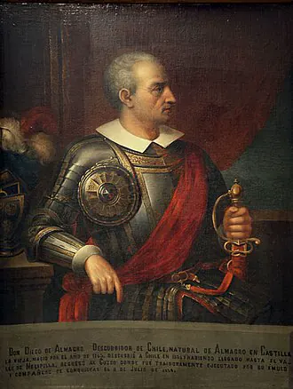

Expedición de Diego de Almagro

Tras la conquista del Imperio inca, la Corona dividió los territorios: a Francisco Pizarro le correspondió Nueva Castilla y a Diego de Almagro, Nueva Toledo, situada más al sur. En julio de 1535, Almagro partió del Cusco con algunos cientos de españoles, miles de indígenas reclutados por la fuerza como cargadores y nobles incas como Paullu Inca, cuya presencia facilitó el paso por tierras del Tawantinsuyu.
La expedición avanzó por el altiplano y el noroeste de la actual Argentina, y cruzó la cordillera en condiciones extremas, con numerosas muertes, sobre todo entre los indígenas. En 1536 llegó al valle de Copiapó, habitado por el pueblo diaguita, y siguió hasta el valle del Aconcagua. Un destacamento enviado al sur se enfrentó con mapuche en Reinohuelén, el primer choque conocido entre ambos.
Sin hallar oro abundante, Almagro regresó en 1537 por el Desierto de Atacama. Su fracaso difundió la imagen de Chile como tierra pobre, lo que dificultó nuevas expediciones. Murió ejecutado en 1538, tras enfrentarse con los Pizarro. La historiografía tradicional lo llamó "descubridor de Chile", un título hoy discutido.
Versión para niños
Diego de Almagro fue un conquistador español que había participado en la conquista del Perú. En 1535 salió desde Cusco hacia el sur, con soldados españoles y miles de indígenas obligados a cargar sus cosas. Cruzaron la alta cordillera de los Andes, donde muchas personas murieron de frío y hambre. En 1536 llegaron al valle de Copiapó. Almagro buscaba oro, pero no encontró las riquezas que esperaba. Decepcionado, volvió al Perú atravesando el desierto.
Para maestros
Nivel sugerido: 5° básico
Objetivo: Analizar las motivaciones, el recorrido y las consecuencias de la primera expedición española a Chile, incluido su costo humano para los pueblos indígenas.
Preguntas para la clase:
- ¿Qué buscaba Almagro al venir a Chile?
- ¿Quiénes pagaron el mayor costo del viaje y por qué?
- ¿Por qué después de este viaje pocos españoles querían venir a Chile?
Actividad (20–30 min): En un mapa, los estudiantes trazan la ruta de ida (por la cordillera) y la de regreso (por el desierto) de Almagro. Luego comparan en una tabla las dificultades de cada ruta y discuten qué papel tuvo el trabajo forzado de los indígenas en la expedición.
Fuentes sugeridas: Memoria Chilena; Biblioteca Nacional Digital; Museo Histórico Nacional.
Objetivos de Aprendizaje (Currículum Nacional)
- 5° básico · HI05 OA 02 Describir el proceso de conquista de América y de Chile … algunas expediciones y conflictos bélicos, y la fundación de ciudades
- 5° básico · HI05 OA 04 Investigar sobre los efectos de la conquista sobre los pueblos indígenas americanos, utilizando fuentes dadas por el docente
- 8° básico · HI08 OA 06 Analizar los factores que explican la rapidez de la conquista y la caída de los grandes imperios americanos
Personajes
Revisión humana pendiente. Cómo se revisa · Reportar un error
Cómo citar: Historia de Chile. (2026). Expedición de Diego de Almagro. En Historia de Chile: atlas y línea de tiempo. https://moises-salgado.github.io/historia-de-chile/momento/expedicion-de-diego-de-almagro.html